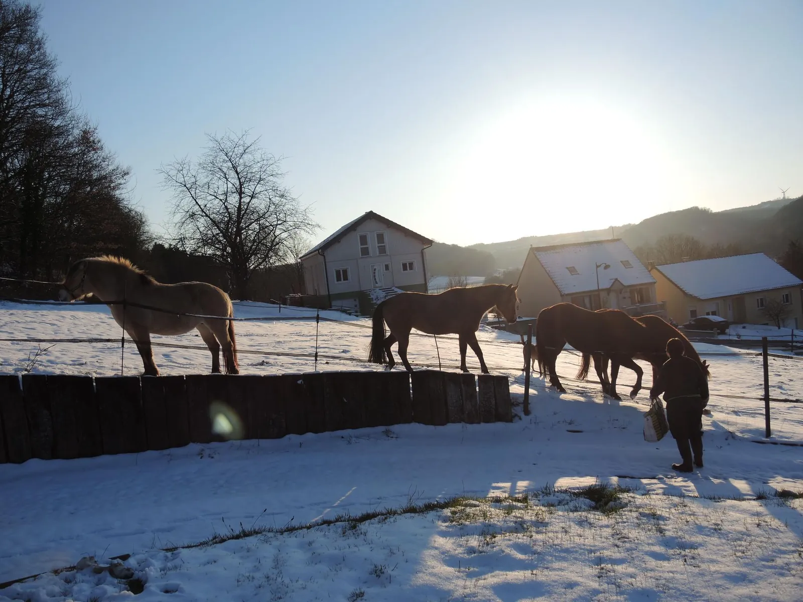

Dos casas tranquilas entre el prado y el bosque
En la colina que domina Varsberg, en el paraje Vogelsgesang, «el canto de los pájaros». Dos hectáreas de prados junto al bosque, senderos que salen del jardín y una terraza para cada casa.


Un lugar que hace honor a su nombre
Nuestros dos gîtes son dos apartamentos en la planta jardín de nuestra casa, en el corazón de una gran finca de dos hectáreas verdes al borde del bosque, en un lugar excepcional llamado «Vogelsgesang», el canto de los pájaros.
Típico del paisaje lorenés, el entorno es de naturaleza exuberante y ofrece un panorama precioso en un ambiente de calma y serenidad.
Agnès y Marc le dan la bienvenida
Gîtes de France (3 espigas) desde 2016, Clévacances y Tourisme & Handicap. Hablamos francés, inglés y alemán.



La finca en imágenes
Caballos en el prado, terraza al sol, nieve en la colina: déjelo pasar.
▶ Ver el diaporamaDos gîtes gemelos, la misma vista
Las mismas prestaciones a ambos lados. Reserve una, o las dos para toda la familia.

Reserve directamente
Sin comisión, con respuesta en 24 h. Ropa de cama incluida, camas hechas a la llegada, limpieza final incluida.
A pie desde el jardín, o a una hora en coche
Senderos sin cruzar carreteras, lago y base náutica a 3 km, y Metz, el Sarre y Luxemburgo a un día de excursión.

3 km

12 km

15 km

30 km

40 km

47 km
Lo que dicen nuestros huéspedes
4,9 / 5 Airbnb · 9,2 / 10 Abritel · 4,7 / 5 Gîtes de France
★★★★★Hôte très accueillant et séjour très agréable. Gîte très calme, bien équipé, très bonne literie, cadre forestier et nombreux sentiers.
Nicolas · Gîtes de France · 2025-08
★★★★★Impeccable. Excellent rapport qualité-prix, logement conforme à la description — et merci pour la bouteille de vin de Moselle.
Kevin · Gîtes de France · 2025-02
★★★★☆Gîtes au calme, propriétaires sympas, confortable.
Jean · Gîtes de France · 2026-08